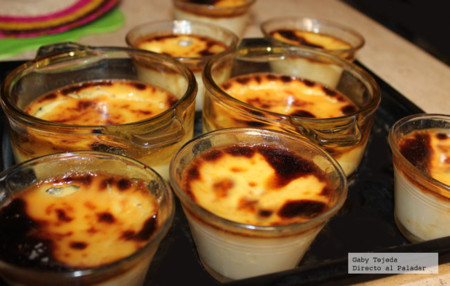
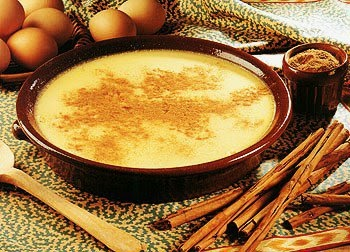

50 recetas de postres caseros FACILES y RAPIDOS de hacer
 Menu recetas con POLLO Recetas de pollo para hacer con niños recetas de ALITAS DE POLLO recetas de PECHUGA DE POLLO recetas de POLLO AL HORNO recetas de POLLO EN SALSA recetas de POLLO FRITO recetas de ALITAS DE POLLO FRITAS recetas de POLLO GUISADO RECETAS caseras de APERITIVOS FACILES Y RAPIDOS TAPAS Y PINCHOS PARA BARES recetas de CARNES recetas de PESCADO recetas CON QUESO recetas de VERDURAS RECETAS DE CALABAZA RECETAS DE BERENJENAS RECETAS CON CALABACÍN RECETAS CON ESPINACAS RECETAS DE ALCACHOFAS RECETAS CON BRÓCOLI RECETAS DE COLIFLOR OTRAS VERDURAS recetas de SOPAS Y CREMAS RECETAS DE CREMAS DE VERDURAS RECETAS DE SOPAS RECETAS DE POSTRES CASEROS FACILES Y RAPIDOS TARTAS SIN HORNO POSTRES SIN HORNO RECETAS DE BIZCOCHOS TARTAS DE CHOCOLATE TARTAS FÁCILES DE HACER EN CASA POSTRES CON HORNO recetas con ARROZ recetas de PASTA recetas de LEGUMBRES recetas de ENSALADAS recetas de PATATAS recetas de HUEVO recetas de SALSAS TRUCOS DE COCINA recetas de PIZZAS Y PANES ESTILO DE VIDA RECOPILACIONES DE COCINA CASERA Y FACIL RECETAS ESPECIALES RECETAS DE COMIDAS FACILES RAPIDAS Y RICAS DE HACER RECETAS VEGETARIANAS RECETAS POR MOMENTO DEL DIA Desayunos Almuerzos Comidas Meriendas Cenas Recetas de COCINA PARA NIÑOS Desayunos para niños Comidas para niños Meriendas para niños Cenas para niños Recetas para EMBARAZADAS Recetas para llevar al trabajo Recetas SIN GLUTEN Recetas SANAS Recetas SIN LACTOSA Recetas BAJAS EN CALORIAS Recetas SIN CARNE Recetas FITNESS Recetas SIN GRASA Recetas CON FIBRA Recetas LIGHT recetas para CONGELAR RECETAS DE COCINA INTERNACIONAL Comida CHINA Comida MEXICANA Comida ITALIANA TODAS las Recetas SOBRE GORKA BARREDO RECETAS DE VERANO recetas con POLLO Recetas de pollo para hacer con niños recetas de ALITAS DE POLLO recetas de PECHUGA DE POLLO recetas de POLLO AL HORNO recetas de POLLO EN SALSA recetas de POLLO FRITO recetas de ALITAS DE POLLO FRITAS recetas de POLLO GUISADO RECETAS caseras de APERITIVOS FACILES Y RAPIDOS TAPAS Y PINCHOS PARA BARES recetas de CARNES recetas de PESCADO recetas CON QUESO recetas de VERDURAS RECETAS DE CALABAZA RECETAS DE BERENJENAS RECETAS CON CALABACÍN RECETAS CON ESPINACAS RECETAS DE ALCACHOFAS RECETAS CON BRÓCOLI RECETAS DE COLIFLOR OTRAS VERDURAS recetas de SOPAS Y CREMAS RECETAS DE CREMAS DE VERDURAS RECETAS DE SOPAS RECETAS DE POSTRES CASEROS FACILES Y RAPIDOS TARTAS SIN HORNO POSTRES SIN HORNO RECETAS DE BIZCOCHOS TARTAS DE CHOCOLATE TARTAS FÁCILES DE HACER EN CASA POSTRES CON HORNO recetas con ARROZ recetas de PASTA recetas de LEGUMBRES recetas de ENSALADAS recetas de PATATAS recetas de HUEVO recetas de SALSAS TRUCOS DE COCINA recetas de PIZZAS Y PANES ESTILO DE VIDA RECOPILACIONES DE COCINA CASERA Y FACIL RECETAS ESPECIALES RECETAS DE COMIDAS FACILES RAPIDAS Y RICAS DE HACER RECETAS VEGETARIANAS RECETAS POR MOMENTO DEL DIA Desayunos Almuerzos Comidas Meriendas Cenas Recetas de COCINA PARA NIÑOS Desayunos para niños Comidas para niños Meriendas para niños Cenas para niños Recetas para EMBARAZADAS Recetas para llevar al trabajo Recetas SIN GLUTEN Recetas SANAS Recetas SIN LACTOSA Recetas BAJAS EN CALORIAS Recetas SIN CARNE Recetas FITNESS Recetas SIN GRASA Recetas CON FIBRA Recetas LIGHT recetas para CONGELAR RECETAS DE COCINA INTERNACIONAL Comida CHINA Comida MEXICANA Comida ITALIANA TODAS las Recetas SOBRE GORKA BARREDO RECETAS DE VERANO
Cocina Casera » RECETAS DE POSTRES CASEROS FACILES Y RAPIDOS
RECETAS DE POSTRES CASEROS FACILES Y RAPIDOS
Postres caseros faciles de hacer : por Verónica Redondo
POSTRES FACILES RAPIDOS ECONOMICOS Y CASEROS
¿A quién no le gustan los postres? Y por ello no nos referimos solamente a comidas azucaradas. En el mundo culinario podemos encontrar muchos tipos de postres, desde tartas hasta sorbetes de frutas deliciosas. Nuestro cocinero, Gorka Barredo, ha selecionado para ti los mejores postres caseros y fáciles que puedes hacer tu mismo en casa, sin necesidad de ser un experto pastelero. Estas recetas te pueden ayudar a poner un punto final inolvidable a tus menús más importantes para tu familia o amigos.
En la actualidad pasamos mucho más tiempo en nuestro hogares y empleamos un poco más de tiempo en la cocina, ideando nuevas recetas y nuevos menús para comer cada día. Elaborar postres solos, o con ayuda de los más pequeños de la casa, se ha convertido en un pasatiempo en la época que estamos viviendo. Para ello, buscamos postres económicos , sencillos de hacer en casa y con ingredientes que tenemos en nuestra despensa o son muy fáciles de encontrar en el supermercado de nuestro barrio.
LAS MEJORES RECETAS DE POSTRES CASEROS FÁCILES DE HACER
Para ayudarte a encontrar ideas de postres fáciles de hacer en casa, en Cocina Casera y Fácil hemos elaborado para ti una selección de recetas de postres caseros fáciles clasificadas en varias categorías. De este modo, podrás encontrar con facilidad la receta que mejor se adapte a tu menú.
TARTAS SIN HORNO FÁCILES
La repostería nos gusta a todos, pero lo cierto es que no es nada fácil preparar postres y dulces en casa, ya sea porque requiere de mucho tiempo y práctica o porque la mayoría necesitan de horno para prepararse. En Cocina Casera y Fácil queremos ponértelo fácil para que te conviertas en un experto repostero y hemos seleccionado para ti una recopilación de tartas sin horno fáciles de hacer en casa.
TARTA DE QUESO SIN HORNO
La tarta de queso sin horno , es un clásico entre los clásicos. Una tarta fría ideal para preparar como postre, como tarta de cumpleaños, o para una fiesta, en general. Es muy fácil de hacer y con ingredientes sencillos
PASTEL DE ARROZ VASCO
Pastel de arroz de Bilbao . Se trata de un dulce típico del País Vasco, pero sobre todo de la zona de Bilbao. El origen de este postre no es muy claro, ya que existen varias versiones. En la actualidad preparar este postre es muy sencillo. A pesar de su nombre, no lleva ni un sólo grano de arroz
POSTRES FÁCILES SIN HORNO
¿Quieres hacer postres en casa pero no dispones de horno o no te apetece usarlo? En repostería hay muchas muchas recetas que se pueden hacer sin utilizarlo y están igual de deliciosas. Nosotros hemos preparado muchas de ellas y por eso te traigo una recopilación de las mejores recetas de postres fáciles de hacer sin horno que además son muy rápidas de preparar en casa sin necesidad de tirarte muchas horas en la cocina.
ARROZ CON LECHE CREMOSITO
El arroz con leche es el postre por antonomasia de los hogares de toda España y América latina. Es muy fácil de hacer, y con pocos ingredientes. Siguiendo la técnica adecuada, además, lograremos que nos quede mucho más cremoso. Para ello, es importante las cantidades y sus proporciones.
TRUFAS DE CHOCOLATE
¿Quién se puede resistir a unas buenas trufas de chocolate ? Las trufas, es un hongo muy cotizado – y muy caro – de color negruzco. Pero estas trufas de chocolate, poco tienen que ver con este hongo. Tanto en sabor como en su precio, ya que las que aquí proponemos son muy económicas de hacer.
LECHE FRITA
La leche frita es un postre muy típico de la gastronomía española. Consiste básicamente en leche, a la cual se le somete a un sencillo tratamiento para que obtenga un sabor delicioso y espese un poco. Después se reboza y se fríe. Es una receta que, aunque conlleva algo de trabajo, es muy fácil de hacer.
BIZCOCHOS FÁCILES DE HACER
Recetas de bizcochos fáciles de hacer ¿Quién no tiene recuerdos de esos bizcochos que nos hacían en casa de pequeños para desayunar o en ocasiones especiales? ¿Y de esas panaderías de pueblo que olían bizcochos recién hechos cada mañana? Ahora puedes volver a recordar todos esos momento haciendo tu mismo y en casa esos bizcochos que tanto te gustan.
BIZCOCHO DE LECHE ESPONJOSO
Un delicioso bizcocho de leche esponjoso casero , ideal para comer tal cual, con mermelada o para mojar en leche.
BIZCOCHO GENOVÉS ¡CON TRES INGREDIENTES!
Bizcocho casero con 3 ingredientes . Aquí veremos cómo preparar el bizcocho básico y que, te puedo asegurar que, por muy básico que sea, está más rico que los que llevan levadura.
BIZCOCHO DE ZANAHORIA
B izcocho de zanahoria casero . También conocido como pastel de zanahoria. Este bizcocho, es muy recurrente para tomarlo como desayuno o merienda, con leche, con café o sólo. También nos servirá como base de otras tartas.
TARTA DE CHOCOLATE FÁCILES DE HACER
Las tartas son un postre que a todos nos encantan. El chocolate es el ingrediente preferido de los más golosos de la casa… ¿Y si juntamos ambas cosas? Obtenemos un postre irresistible ideal para cualquier ocasión. Como sabemos que os encanta, en este Blog hemos preparado varias recetas de tartas de chocolate deliciosas que queremos que pruebes en casa. Son muy sencillas y su resultado, ya te lo puedes imaginar… ¡No dejarán ni las migas!
TARTA DE CHOCOLATE SIN HORNO
Tarta de chocolate sin horno . Si hablamos de tartas fáciles de hacer en casa, esta tarta es una de las más sencillas y rápidas de hacer. Además, se realiza con muy pocos ingredientes y como resultado, obtendremos una tarta muy suave.
TARTA TRES CHOCOLATES
La tarta tres chocolates , es un delicioso postre fácil de hacer que consiste en una tarta hecha con tres capas de chocolate distintos. Se va haciendo poco a poco, capa por capa así que, no es el postre más rápido de hacer. Ya que hay que esperar a que cada capa se enfríe, antes de preparar la siguiente.
TARTAS FÁCILES DE HACER EN CASA
¿A quién no le gusta las tartas? Este postre siempre ha estado presente en todas las celebraciones de nuestra vida. Desde cumpleaños hasta bodas e incluso en alguna ocasión especial como por ejemplo, un aniversario. Ahora puedes prepararlas tu mismo en casa sin necesidad de gastarte mucho dinero en una pastelería. En Cocina Casera y Fácil te dejo una recopilación de recetas de tartas fáciles , hechas de forma tradicional y con ingredientes que puedes encontrar en cualquier supermercado.
TARTA DE MANZANA CASERA Y FÁCIL
Quién no conoce la tarta de manzana . Un más que popular postre que tiene muchas variantes. Aquí vamos a prepararla con una base de galleta y mantequilla que, se hace de manera muy fácil y rápida.
TARTA DE QUESO CASERA CON 3 INGREDIENTES
La tarta de queso japonesa es una receta que se ha hecho muy popular últimamente. Y gran parte del motivo es porque está hecha ¡con tan solo 3 ingredientes!.
POSTRES CON HORNO FACILES Y RAPIDOS
Si eres de las personas a las que les encanta cocinar y sobre todo preparar postres, pero no dispones de mucho tiempo libre, aquí podrás encontrar una selección de recetas de postres con horno faciles y rapidos de hacer en casa. Solamente necesitarás preparar los ingredientes y dejarlo todo listo para que el horno se encargue de todo el proceso de cocción sin necesidad de que estés en todo momento en la cocina.
GALLETAS DE MANTEQUILLA CON CHOCOLATE
Vamos a hacer una receta de las de toda la vida. Unas galletas de mantequilla con chocolate . ¿Cómo se preparan y qué necesitamos para hacerlo? Pues la lista de ingredientes es corta y la mantequilla es, como no, la protagonista.
ROSQUILLAS DE SAN BLAS
Rosquillas de San Blas . Las rosquillas típicas de los puestos o casetas de ferias y romerías. Esas tradicionales rosquillas blancas que suelen lucir colgadas de los tejados de las mismas, empaquetadas en hilera y atravesadas por una ramita de laurel.
Si te han gustado estas recetas de deliciosos postres sencillos de hacer en casa, puedes ver las recetas de verduras que hemos preparado para ti.
CUADRADITOS DE LIMON
Cuadraditos de limón: por Verónica Redondo RECETA DE CUADRADITOS DE LIMON Si eres un amante de las recetas de postres fáciles y rápidos de hacer en casa, no … [ver receta ]TARTA DE NARANJA SIN HORNO
Tarta de naranja sin horno: por Verónica Redondo RECETA DE LA TARTA DE NARANJA SIN HORNO Cuando llega el verano, nos apetece preparar recetas frías que nos ayuden … [ver receta ]PALOMITAS DULCES CASERAS
Palomitas dulces caseras: por Verónica Redondo RECETA DE LAS PALOMITAS DULCES CASERAS Si hay algo que a todos nos gusta depués de un día agotador de trabajo o … [ver receta ]PAN DE PLATANO
Pan de platano: por Verónica Redondo RECETA DEL PAN DE PLATANO CASERO ¿Te gusta acompañar tu desayuno con un delicioso dulce? Actualmente, podemos encontrar infinidad de recetas de este … [ver receta ]PESTIÑOS DE AZUCAR
Pestiños de azucar: por Verónica Redondo RECETA DE LOS PESTIÑOS DE AZUCAR DE LA ABUELA España es un país lleno de tradiciones y la Semana Santa es una de … [ver receta ]MOUSSE DE CHOCOLATE CON BAILEYS
Mousse de chocolate con Baileys: por Verónica Redondo RECETA DE MOUSSE DE CHOCOLATE FACIL CON 3 INGREDIENTES Las recetas de postres gustan a todo el mundo, ya sea desde … [ver receta ]BROWNIE DE CASTAÑAS
Brownie de castañas: por Verónica Redondo RECETA DEL BROWNIE DE CASTAÑAS Brownie de castañas. El brownie es un postre típico de Estados Unidos. Consiste en un bizcocho de chocolate … [ver receta ]FLAN DE CALABAZA
Flan de calabaza: por Verónica Redondo RECETA DEL FLAN DE CALABAZA TRADICIONAL Si te preguntan por un postre popular en nuestra gastronomía, probablemente uno de los que se te … [ver receta ]BROCHETAS DE FRUTA CON CHOCOLATE
Brochetas de fruta con chocolate: por Verónica Redondo RECETA DE BROCHETAS DE FRUTAS CON CHOCOLATE Brochetas de frutas con chocolate. En gastronomía existen un gran número de recetas de … [ver receta ]PERAS AL HORNO CON MIEL Y CANELA
Peras al horno con miel y canela: por Verónica Redondo RECETA DE PERAS AL HORNO CON MIEL Y CANELA Peras al horno con miel y canela. Cuando queremos preparar … [ver receta ]HOJALDRE DE CABELLO DE ANGEL
Hojaldre de cabello de ángel: por Verónica Redondo RECETA DE HOJALDRE DE CABELLO DE ANGEL AL HORNO Hojaldre de cabello de angel. ¿Quién no ha comido alguna vez este … [ver receta ]BUÑUELOS DE CALABAZA
Buñuelos de calabaza: por Víctor F. Ábalos RECETA FÁCIL DE BUÑUELOS DE CALABAZA Vivimos en un país donde tenemos muchas tradiciones. Si lo llevamos al terreno gastronómico, podemos encontrar … [ver receta ]DONUTS CASEROS AL HORNO
Donuts caseros al horno: por Víctor F. Ábalos RECETA DE DONUTS CASEROS ESPONJOSOS AL HORNO ¿Quién no ha comido alguna vez un donut? Estoy seguro que pocas personas van … [ver receta ]PANELLETS RECETA TRADICIONAL
Panellets: por Víctor F. Ábalos RECETA TRADICIONAL DE PANELLETS CASEROS España es un país con muchas tradiciones. Una de las más destacadas es la celebración del Día de Todos … [ver receta ]PAN DE MUERTO RECETA ORIGINAL MEXICANA
Pan de muerto: por Víctor F. Ábalos RECETA ORIGINAL DEL PAN DE MUERTO MEXICANO Cada vez queda menos para que llegue el 1 de noviembre. El día de Todos … [ver receta ]MUFFINS DE CALABAZA
Muffins de calabaza: por Víctor F. Abalos RECETA DE LOS MUFFINS DE CALABAZA Seguramente has oído hablar en más de una ocasión de los famosos muffins. Este alimento es … [ver receta ]HUESOS DE SANTO
Huesos de Santo: Por Víctor F. Ábalos RECETA DE HUESOS DE SANTO Se acerca la festividad de Todos los Santos, un día muy especial en muchos países del mundo. … [ver receta ]TARTA DE LA ABUELA CASERA
RECETA DE LA TARTA DE LA ABUELA CON CREMA PASTELERA Tarta de la abuela. Si hablamos de postres caseros tradicionales, esta tarta es un clásico entre los clásicos. Caracterizada … [ver receta ]BIZCOCHO SIN HUEVO
Bizcocho sin huevo: por Verónica Redondo RECETA DEL BIZCOCHO DE YOGUR SIN HUEVO Bizcocho sin huevo. Existen infinidad de recetas de bizcochos, con sabores y formas de elaborarlo diferentes. … [ver receta ]VASITOS DE OREO
RECETA FACIL DE VASITOS DE OREO Vasitos de oreo. Si hay algo que gusta tanto a niños como a los mayores de la casa, es comer galletas, aunque no … [ver receta ]TARTA DE YOGUR SIN HORNO
TARTA DE YOGUR GRIEGO SIN HORNO Tarta de yogur sin horno. Las tartas sin horno son cada vez más populares gracias a su sencillez y sobre todo, en época … [ver receta ]BIZCOCHO DE PLATANO
RECETA DEL BIZCOCHO DE PLATANO Bizcocho de platano. El bizcocho es uno de los postres que más se prepara en los hogares de todo el mundo. Se trata de … [ver receta ]BRAZO GITANO DE NATA
RECETA DEL BRAZO GITANO DE NATA Brazo gitano de nata. A todos se nos viene en mente una tarta o un bizcocho cuando pensamos en preparar un postre. Existe … [ver receta ]BROWNIE EN TAZA SIN AZUCAR
RECETA DEL BROWNIE EN TAZA SIN AZUCAR FACIL Brownie en taza sin azucar. Una forma muy rápida y sencilla de preparar este delicioso postre. Lo vamos a preparar en … [ver receta ]CLAFOUTIS DE CEREZAS receta original
RECETA DEL CLAFOUTIS DE CEREZAS FACIL Clafoutis de cerezas. Se trata de un postre tradicional de origen francés, con un aspecto bastante peculiar, dado que las cerezas se ponen … [ver receta ]BOMBONES DE CHOCOLATE BLANCO Y COCO
RECETA DE LOS BOMBONES DE CHOCOLATE BLANCO Y COCO Bombones de chocolate blanco y coco. Los bombones son un tipo de dulce que suelen regalarse en fechas especiales. En … [ver receta ]FLAN DE QUESO SIN HORNO
Flan de queso sin horno: por Verónica Redondo RECETA DEL FLAN DE QUESO SIN HORNO Y SIN NATA Flan de queso sin horno. Se trata de un postre muy … [ver receta ]PASTAS DE MANTEQUILLA Y CHOCOLATE
RECETA DE LAS PASTAS DE MANTEQUILLA Y CHOCOLATE Pastas de mantequilla y chocolate. En esta ocasión vamos a preparar unas deliciosas pastas de té. Para ello vamos a elaborarlas … [ver receta ]TIRAMISU italiano receta facil
RECETA DEL TIRAMISU ITALIANO CASERO Tiramisu italiano. Receta original. Se trata de un postre bastante conocido, que tiene como peculiaridad que se hace con bizcochos remojados en café. Aquí … [ver receta ]TARTA DE QUESO LA VIÑA receta
TARTA DE QUESO LA VIÑA RECETA AUTENTICA Tarta de queso la viña. La receta autentica proviene de un restaurante que se ha hecho muy famoso, precisamente por este postre, … [ver receta ]Navegación de entradas
1 2 3 4 NextSigue a Gorka Barredo:
Recetas de Verano ☀️
Sugerencias de Gorka Barredo: El chef
Pollo al horno con patatas Tarta de queso sin horno Tarta de manzana Rabas de calamar Cordon bleu de pollo Pollo frito crujiente Aros de cebolla crujientes Arroz con leche Crema pastelera Berenjenas rellenas Espaguetis Carbonara Bizcocho de chocolate SUPER jugoso Salsa de tomate casera macarrones con carne Pollo a la cerveza Pollo guisado con verduras Ensalada cesar Cocer pulpo Espaguetis rojo con tomate Alubias blancas con verduras Galletas de mantequilla Garbanzos con espinacas Cocer arroz blanco
TODAS LAS RECETAS DE COCINA CASERA Y FÁCIL POR ORDEN ALFABÉTICO
Últimas recetas de Cocina Casera y Facil
CUADRADITOS DE LIMON ALITAS DE POLLO FRITAS ALITAS DE POLLO ADOBADAS AL HORNO ENTRECOT DE TERNERA CON SALSA DE CHAMPIÑONES SOPA DE POLLO CON FIDEOS BERENJENAS CON TOMATE Y QUESO AL HORNO LOMO EN SALSA DE CEBOLLA TARTA DE NARANJA SIN HORNO CAFE DE CALABAZA CERDO AGRIDULCE CHINOCONTACTO Aviso legal y condiciones de uso Política de privacidad Política de Cookies
RECETAS MÁS BUSCADAS
Pollo al horno con patatas y cebolla Tacos mexicanos Pollo a la naranja Hamburguesas caseras Bizcocho esponjoso casero Bizcocho con 3 ingredientes Muslos de pollo asados al horno Pollo frito crujiente Pollo agridulce chino Recetas con calabacín Recetas y comidas vegetarianas Recetas de almuerzos rápidosRecetas de Cocina Casera y Fácil Copyright © 2021.
